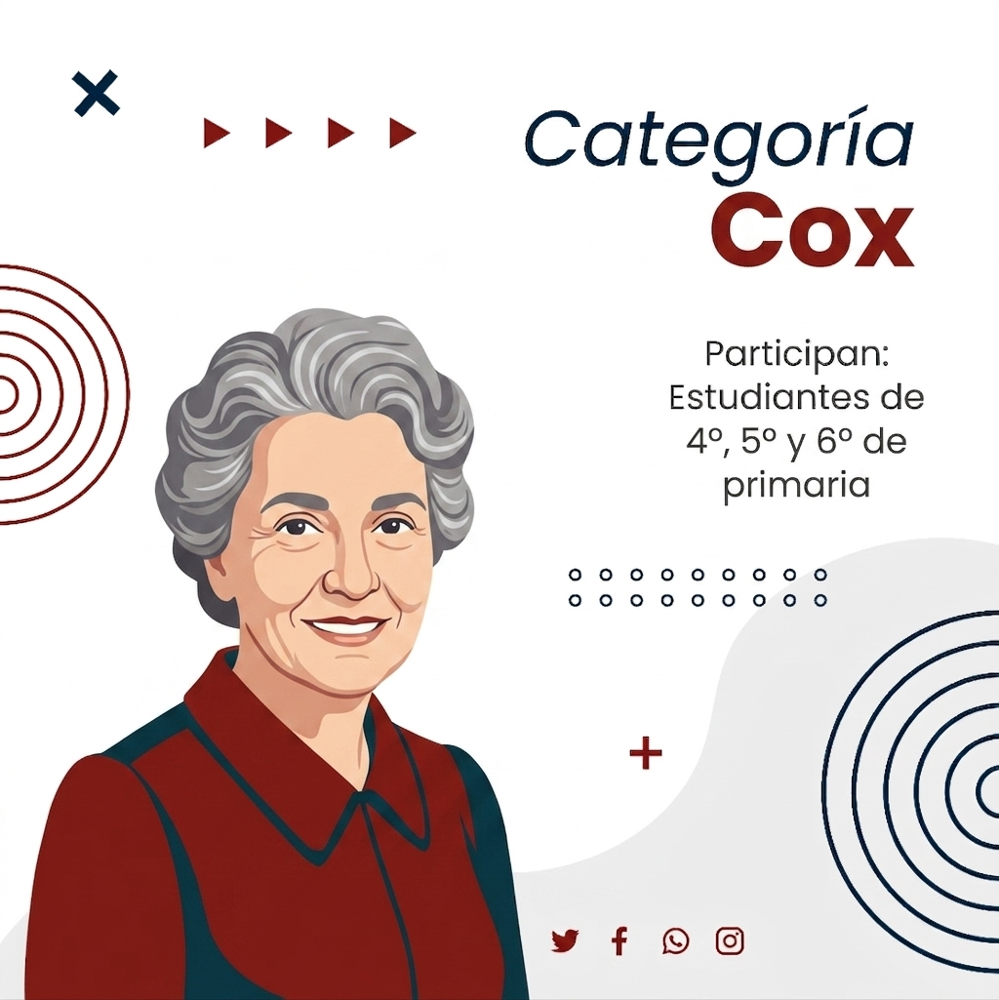
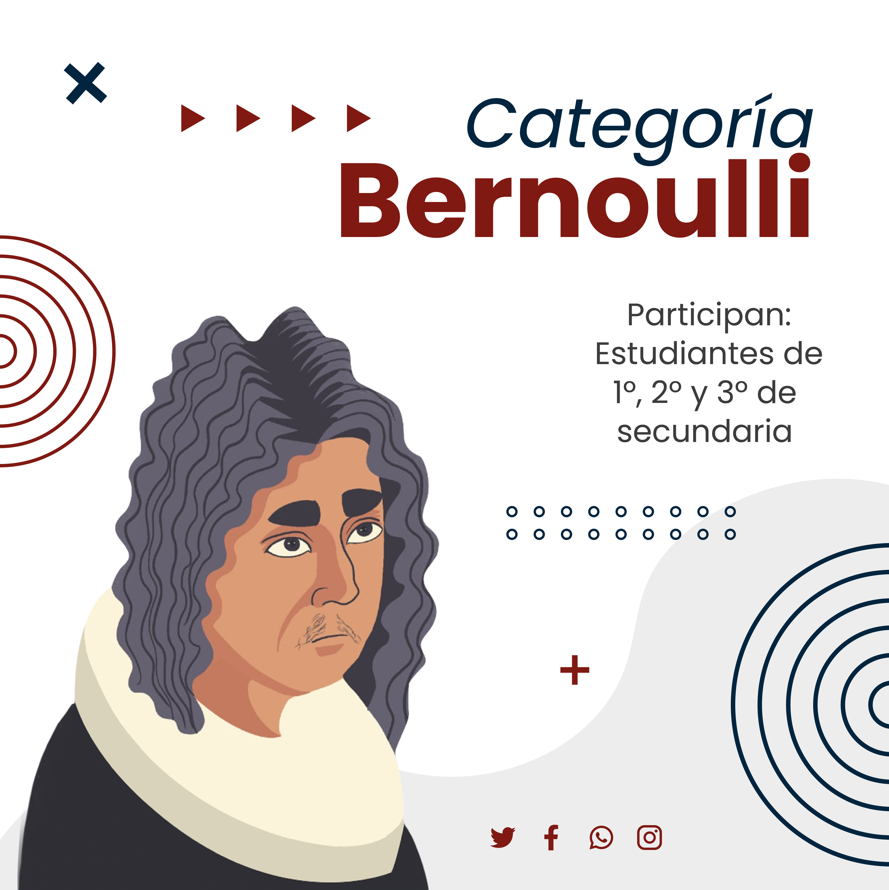
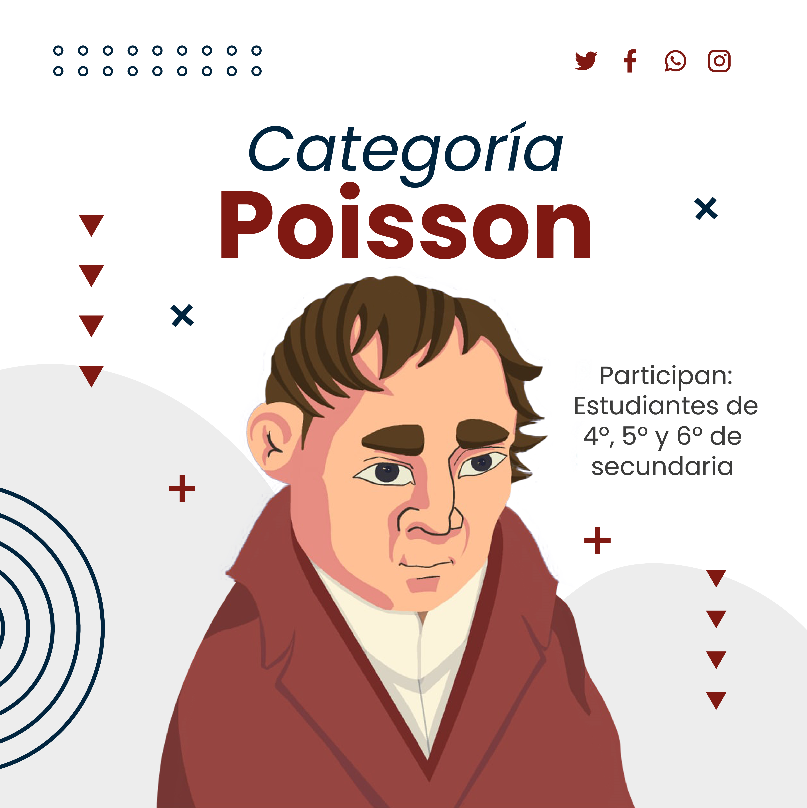
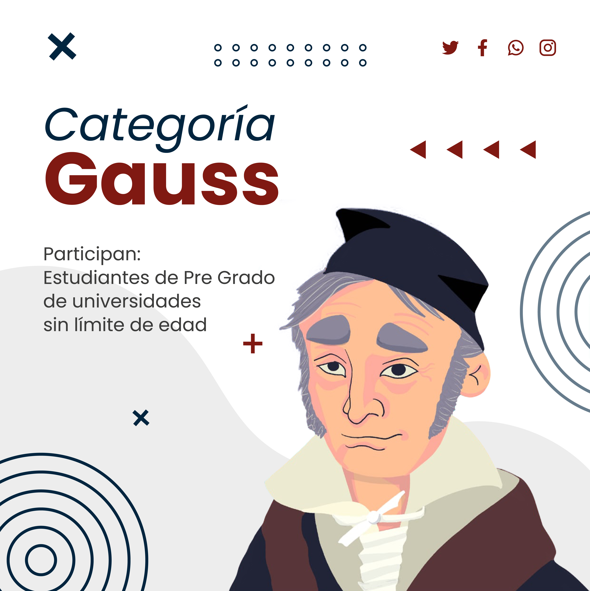

Competencia Boliviana de Pósters Estadísticos
Quinta edición · 2026–2027
Inscripciones abiertas hasta marzo de 2027
Postula tu investigación y forma parte del principal evento de alfabetización estadística de Bolivia. Equipos de 2 a 5 estudiantes, guiados por un tutor, presentan un póster estadístico original. Los mejores trabajos representan a Bolivia en la competencia internacional del ISLP, presente en más de 120 países.
Categorías
Pueden participar todos los estudiantes de Bolivia formando equipos de 2 a 5 personas más un tutor, en una de las siguientes categorías:

Categoría Cox
Primeros pasos en el pensamiento estadístico, explorando una pregunta simple de la realidad cotidiana: encuestas escolares, comparaciones del entorno, registros de fenómenos cotidianos.

Categoría Bernoulli
Recolección y descripción de datos: encuestas a grupos escolares o comunitarios, datos socioeconómicos locales, comparaciones entre grupos o periodos, uso de datos abiertos del INE.

Categoría Poisson
Trabajos que van más allá de la descripción: problemáticas sociales con datos secundarios, salud, educación o medio ambiente, diseño de encuesta propio y análisis inferencial básico.

Categoría Gauss
Investigaciones originales con datos primarios o secundarios, aplicación de modelos estadísticos, análisis de encuestas nacionales (EH, ECOVID, Censos), rigor metodológico y profundidad de análisis.
Premios y reconocimientos
- 1.er lugar por categoría — trofeo y diploma para todos los integrantes del equipo y su tutor. Representa a Bolivia en la competencia internacional.
- 2.do y 3.er lugar por categoría — diploma de reconocimiento por su destacada participación.
- Todos los participantes — certificado digital de participación para los equipos que envíen su póster completo.
Fechas importantes
Lanzamiento de la competencia
Presentación oficial de la quinta versión; difusión de la plataforma de información; publicación de la convocatoria.
Periodo de registro y envío del póster
Apertura de inscripción de grupos; envío de pósters al correo de recepción; publicación de recursos y tutoriales; talleres de orientación a demanda.
Cierre de registro
Último mes habilitado para la inscripción del grupo y envío de pósters; tabulación final del registro de participantes.
Evaluación del póster
Reunión de la comisión de evaluación; distinción de los tres primeros lugares para cada categoría.
Premiación nacional
Convocatoria a los grupos ganadores; ceremonia de premiación de los pósters ganadores por categoría.
Bases del concurso
Las bases contienen toda la información necesaria para la correcta postulación: criterios de admisibilidad, formato del póster, plazos y lineamientos de evaluación. Revisarlas asegura que tu trabajo cumpla con los estándares del Comité Evaluador.
Normas de participación Guía de elaboración del póster Guía de elaboración del póster (Primaria) Criterios de evaluación
¿Quiénes pueden participar?
- Todos los adolescentes y jóvenes de Bolivia, bajo el asesoramiento de un profesor, docente, especialista o investigador.
- Equipos de 2 a 5 estudiantes más un guía o tutor.
- La inscripción es libre y gratuita, y debe realizarla preferentemente el tutor del equipo.
¿Qué características debe tener el póster?
- Tema de investigación libre, basado en el uso, análisis e interpretación de estadísticas.
- Los datos pueden ser recopilados por los participantes o provenir de una fuente confiable ya publicada (citando la fuente).
- Formato bidimensional, una sola hoja, tamaño máximo A1 (841 × 594 mm), archivo de hasta 10 MB.
- Debe incluir: lo que se estudió, resultados principales, discusión y conclusiones, con gráficos titulados y comentados.
- No se aceptan pósters ya enviados a competencias anteriores.
Condiciones de Uso de IA
- Categoría Primaria: El uso de herramientas de Inteligencia Artificial no está permitido.
- Categorías Secundaria y Universitaria:
- Transparencia obligatoria: Se debe revelar el uso de la IA, su propósito y los prompts utilizados.
- Uso exclusivo de soporte: La IA no puede sustituir el pensamiento crítico, las ideas, el trabajo experimental ni las conclusiones del estudiante.
- Autoría original: El proyecto debe ser trabajo del estudiante junto a su tutor. Está prohibido presentar contenido de IA como propio.
- Uso ético y citas: Las sugerencias de la IA deben reescribirse con palabras propias para evitar alertas de plagio. Toda fuente o dato factual provisto por la IA debe ser verificado y citado.
- Sanciones: El jurado descalificará cualquier proyecto con sospecha razonable de plagio o uso inapropiado de IA.
Fuentes de datos sugeridas
| Institución | Enlace |
|---|---|
| FAO | Explora → |
| Banco Mundial | Explora → |
| Instituto Nacional de Estadística (INE) | Explora → |
| UNICEF | Explora → |
Cómo inscribirte
- Lee las normas de participación y los requisitos de tu categoría.
- Descarga la guía completa para la elaboración de tu póster estadístico.
- Prepara tu póster siguiendo los criterios especificados.
- Completa el formulario de inscripción con los datos de tu equipo.
Preguntas frecuentes
¿Qué es un póster estadístico?
Una presentación visual que cuenta una historia con datos: incluye una pregunta de investigación, la recolección y análisis de datos, y las conclusiones derivadas. El formato es libre, pero debe ser claro y comunicar correctamente los resultados.
¿En qué formato debe enviarse el póster?
En PDF o imagen de alta resolución (JPG/PNG), al correo islp.bolivia@gmail.com. Dimensiones recomendadas A1 (841 × 594 mm) o proporciones similares, archivo de hasta 10 MB.
¿Cómo se evalúan los pósters?
Con cuatro criterios: pertinencia estadística, calidad de los datos, presentación visual y solidez de las conclusiones.
¿Necesito conocimientos avanzados de estadística?
No. Se valora la curiosidad, el uso apropiado de datos y la claridad al comunicar hallazgos. Para primaria y secundaria son válidos gráficos de barras, tablas de frecuencia o proporciones simples, bien interpretados.
¿Cuál es la fecha límite de envío?
El período de inscripción y envío va de octubre de 2026 a febrero de 2027, con cierre definitivo en febrero de 2027.
¿No encontraste respuesta a tu pregunta? Escríbenos a Facebook o revisa la página de contacto.